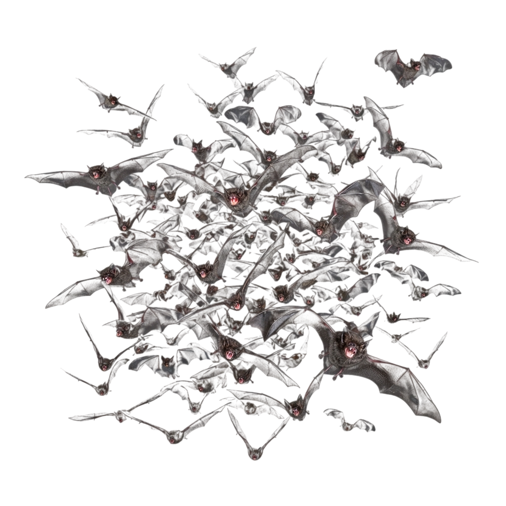
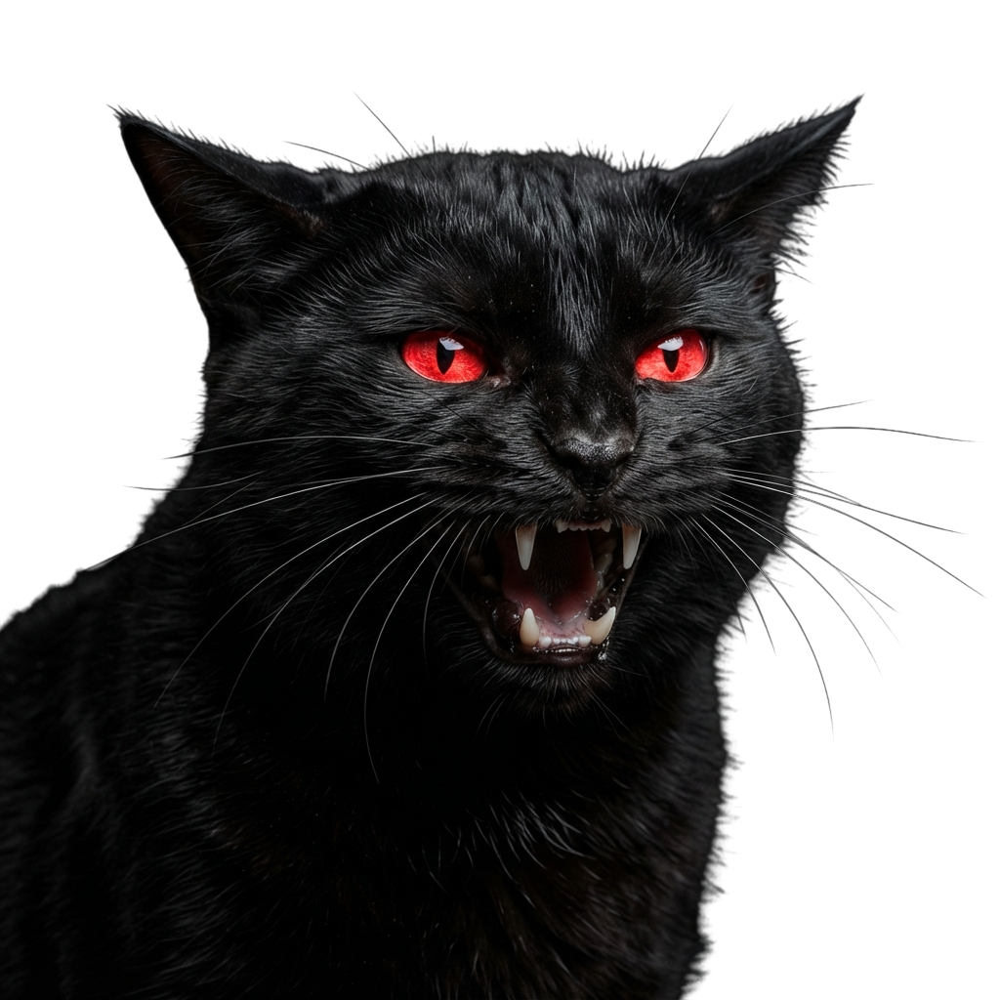

HAUNTED HOUSE
恐 怖 の 館 へ よ う こ そ
▼ SCROLL ▼
恐 怖 の 館 へ よ う こ そ
▼ SCROLL ▼
このサイトでは、不可解なことが起こります
ABOUT
100年前、この館に住んでいた一家は、ある夜とつぜん姿を消した。
残されたのは、書きかけの日記と、止まったままの時計だけ——。
あなたに与えられた時間は15分。館の奥にある「鍵」を見つけ、
正面玄関から生きて出ることができれば、あなたの勝ちです。
ATTRACTIONS

暗闇の中、あなたの名前を呼ぶ声がする。決してふり返ってはいけない。

天井をおおう無数の羽音。ひとつ、また、ひとつと、闇が動きだす。

扉の前に、赤い目の猫が座っている。通してくれるかは、猫しだい。
INFORMATION
| 開催日 | 2026年10月31日（土）〜 11月3日（火） |
|---|---|
| 時間 | 18:00 〜 22:00（最終受付 21:30） |
| 場所 | 旧・霧ヶ丘洋館 |
| 料金 | 1,800円 / 高校生以下 1,200円 |
| 所要時間 | 約15分 |